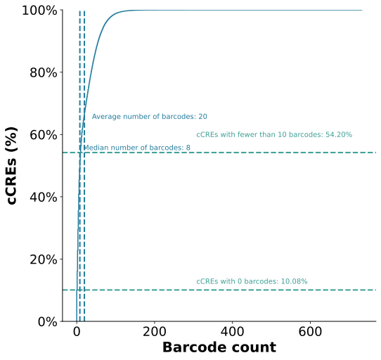
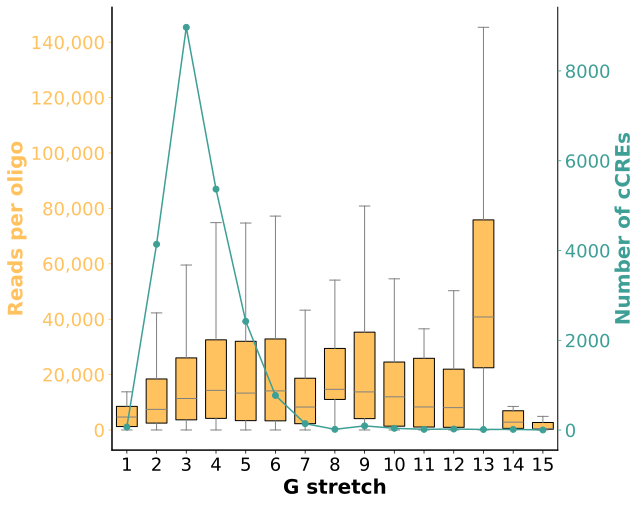
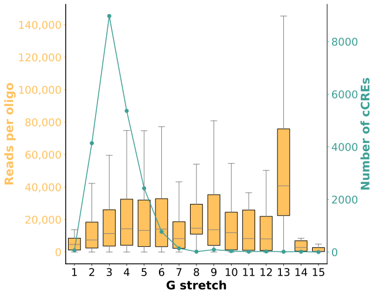
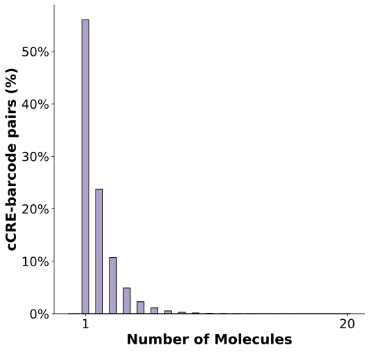
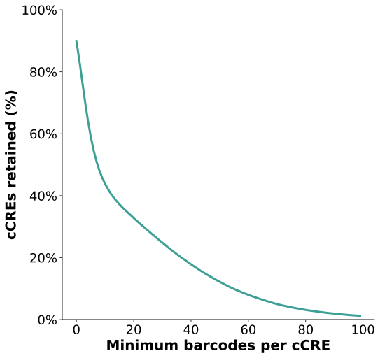
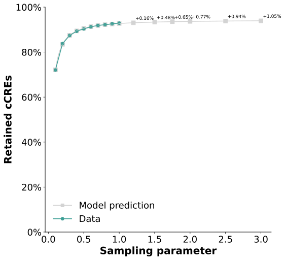
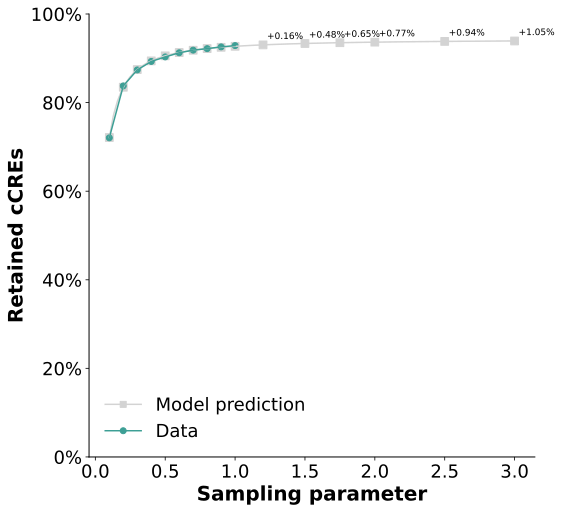

Chapter 2 Associations QC
2.1 BCs per cCRE
Goal: An empirical cumulative function (eCDF) of BCs per cCRE
Input file: BC-cCRE association file
Evaluated metrics: BC replicability

Legend:
Interpretation:
2.2 PCR bias - GC
Goal: This analysis assesses GC content bias in PCR amplification
Input file: BC-cCRE association file
Evaluated metrics: Complexity


Legend:
Interpretation: The successful example shows a relatively consistent number of reads per GC content, and PCR conditions that are optimized for the GC content levels of most cCREs (peaks are close to one another). The unsuccessful example shows both a strong amplification bias and suboptimal PCR conditions for the GC content levels of most cCREs
2.3 PCR bias - G Stretches
Goal: This analysis assesses G-stretches bias in PCR amplification
Input file: BC-cCRE association file
Evaluated metrics: Complexity
 

Legend:
Interpretation:
2.4 UMIs per association
Goal:
Input file: Associations file before filtering for minimal number of associations
Evaluated metrics:

Legend:
Interpretation:
2.5 Retained cCREs
Goal: Retained cCREs per increasing cutoffs of BC number per cCRE
Input file: BC-cCRE association file
Evaluated metrics: BC replicability

Legend:
Interpretation:
2.6 cCREs per BC
Goal:
Input file: Associations file before filtering for BC promiscuity
Evaluated metrics: BC promiscuity


Legend:
Interpretation:
 
